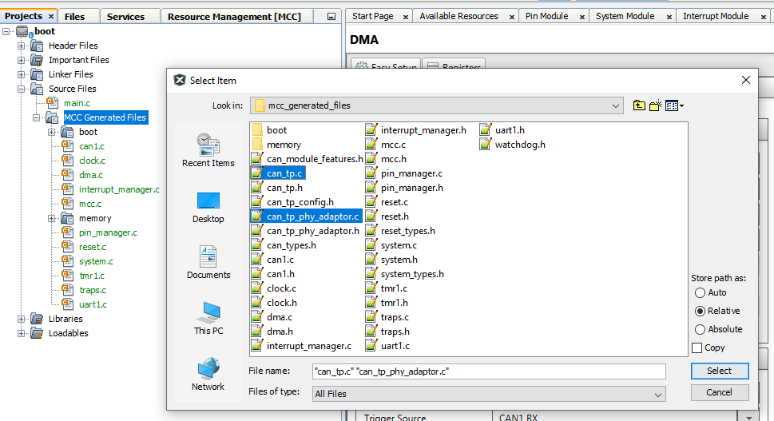

Creating the Bootloader Example Using the CAN Physical Layer with the ECAN Controller
Introduction
This example will show how to create a CAN Bootloader DEMO from scratch using the dsPIC33EP512MU810 processor module for the Explorer 16/32 board.
This demo uses the ISO 15765-2 CAN Transport Protocol layer to transport custom bootloader commands over the CAN bus
as seen in the diagram below:
Tools
Software
- The unzipped example project files, boot.X and app.X
- Microchip MPLAB® X version 5.40 or later
- Microchip MPLAB® XC16 C compiler version 1.60 or later
- Unified Bootloader Host Application v1.17.0 or later
- Microchip MPLAB® Code Configurator version v4.0.1 or later (optional – for code configuration)
- 16-bit Bootloader MCC module version 1.18.3 or later (optional – for code configuration)
- The drivers for the selected Peak CAN-FD protocol analyzer/protocol generator (available at https://www.peak-system.com/Home.59.0.html?&L=1)
- The ISO-TP drivers from Peak - https://www.peak-system.com/PCAN-ISO-TP-API.369.0.html?&L=1
Hardware
- Explorer 16/32 Demo board
- dsPIC33EP512MU810 Processor module or other Processors with the Microchip ECAN module
- A programmer/debugger of choice
- A Peak CAN protocol analyzer/protocol generator. A PCAN-USB FD was used for development of this demo
(https://www.peak-system.com/PCAN-USB-FD.365.0.html?&L=1).
- A CAN cable
- An MCP2542 click board (https://www.mikroe.com/mcp2542-click) or another appropriate CAN transceiver click
board.
It is important that this is just a transceiver and not a CAN-to-SPI/UART converter chip.
- A micro USB cable, a USB-Type C cable, or a 9v power adapter for the Explorer 16/32 (for powering the board).
Software Installation
Unified Bootloader Host Application
The Unified Bootloader Host Application comes in a .zip file. This file should be unzipped to any desired location.
Once the host application has been unzipped, the ISO-TP driver for the Peak protocol generator needs to be copied into the correct location. Unzip the driver package downloaded from the Peak website into any desired location.
After unzipping the driver .zip file, copy the following file:
- FROM: The Peak driver package "PCAN-ISO-TP/x64/PCAN-ISO-TP.dll"
- TO: Host application sub folder named "lib"
Creating the Demo
Hardware Configuration
- With the Explorer 16/32 Board detached from any power source, programmer, or USB connection:
- Connect the dsPIC33EP512MU810 processor module into the socket on the Explorer 16/32 Board such that the notched
edge is
in the top left corner matching the silk screen on the Explorer 16/32
- Connect the MCP2542 daughter board into the mikroBUS™ A slot.
- Connect the programmer to the Explorer 16/32
- Connect the Peak analyzer/generator to your computer.
- Connect the Peak analyzer/generator to the MCP2543 daughter board with the CAN cable.
- Power the board using either USB cable or the 9 volt adapter plug.

Creating the Bootloader
- Create a new project called boot for your part. I will use the part dsPIC33EP512MU810 and the compiler 1.61. A compiler version 1.60 or later is mandatory.

Open MCC
- Go to Project Resources, System Module
- Configure Clock to be 8000000 and Primary Oscillator
- Enable the PLL and configure the PLL to generate a 40Mhz Fosc as shown below.
- Disable the Auxiliary Clock if its not needed
- If you're using the debugger, configure the ICD for your setting. For this board and PIM use PGEC1 and PCED1
- Finally, depending on your part you may want to allow multiple reconfigurations of the GPIO by switching to the register view and changing the IOL1WAY bit to "Allow Multiple reconfigurations"
- Adding Bootloader to the project.
- In MCC, go to Device Resources, Libraries, 16-Bit Bootloader and add the 16-Bit Bootloader:Bootloader to the project.
- Go to the 16-Bit Bootloader Configuration screen shown below
- Select UART1 Foundation Services as the Protocol for communication device (we will not use this but selecting here will help generate the needed code.)
- Change the Bootloader End Address to 0x3000
- For this example I will default to the simplest verification method of "Not Blank"
- We will be using T1 as a timer source in the bootloader so we need to scroll further down to the interrupts, and switch the T1 to "Keep In Bootloader" as shown below.

Adding Timer 1 to the project.
A timer for the CAN ISO TP layer is needed so add Timer 1 to the project.
- Go to Device Resources, Timer and add TMR1 to the project
- Go to TMR1 Configuration and configure Timer to generate a 1msec Period. This may require changing the prescaler
- Enable the TMR1 Interrupts
Adding DMA to the project.
For CAN to operate, DMA is needed so this section will add DMA to the project and configured.
- Go to Device Resources, and add both CAN1 and DMA to the project
- After adding these, go to the DMA Module
- For Channel 0 select CAN1_TX shown below
- For Channel 1 select CAN1_RX shown below
Adding CAN to the project.
Next, Add CAN to the project and configure it.
- Go to Device Resources, and add CAN1 to the project

- Open the CAN1 Configuration Screen shown below.
- Change CAN1 Bus Speed to 125kbs
- Change Time Quanta to 10
- Change Sample Point to 70%
- Go to the Transmit-Receive Settings
- Change DMA Buffer Size to 16
- Select 1 Transmit Buffer
- In Message ID Box, change value to 0xA1
- Leave Mask as Mask 0 and Buffer as Receive Buffer RB1 and press the ADD button
- Verify the Message ID in the Message Acceptance Filter shows 0xA1
Configuring the GPIO Pins.
For this project, four GPIO pins will be configured. An RX and TX set of pins for the CAN. 1 GPIO input to monitor the value on the SW3 and one GPIO pin to control the LED D3 on the board. The final configuration is shown below.
- Open the Pin Manager, Grid View shown below
- LED D3 is connected to RA0 so configure RA0 and a GPIO Output
- Switch SW3 is connected to pin RD6 so configure RD6 and a GPIO Input
- CAN1 TX is connected to the Click A port pin via GPIO Pin RF3
- CAN1 RX is connected to the Click A port pin via GPIO Pin RF2
Generating the project.
All of the peripherals have been configured and the next step is to generate the project.
- Go to Project Resources and press Generate. This should generate a large set of files for the project.
- Because CAN is being manually added to the bootloader project, we need to copy over the CAN ISO TP files from the current demo project.
The user needs to go to the example bootloader project, and go to the directory ecan\boot.X\mcc_generated_files and copy all of the files starting with can_tp to the same directory in the new project that was just created.
- Next, go to the example bootloader project, and go to the directory ecan\boot.X\mcc_generated_files\boot and copy the file com_adaptor_can.c to the same directory in the new project that was just created.
- We now need to add these copied files to the project. Go to the Projects, boot, Source Files, MCC Generated files and right click on the MCC Generated files and click on Add Existing Items The add the new .c files starting with can_tp to the project

- Next go to the boot directory and add the existing item com_adaptor_can.c
- Finally, since we just added the file com_adaptor_can.c to the project, we need to disable the project from using the file com_adaptor_uart.c. So right click on the file com_adaptor_uart.c and exclude it from the build.
Building the project.
All of the files have now been added to the project and we can start compiling and enabling the CAN features to the program.
- First, compile the project by pressing the clean and compile button. This should compile the program with no errors.
- The CAN initialization now needs to be added to the project by copying the main.c from the example code to the main.c file in the new project. The updated main.c code is shown below
#include "mcc_generated_files/system.h"
#include "mcc_generated_files/can1.h"
#include "mcc_generated_files/can_tp.h"
#include "mcc_generated_files/boot/boot_demo.h"
/*
Main application
*/
uint8_t rxBuffer[512];
void TMR1_CallBack(void)
{
CAN_TP_Tick();
}
int main(void)
{
// initialize the device
SYSTEM_Initialize();
BOOT_DEMO_Initialize();
CAN_TP_Initialize();
CAN_TP_RxMessageBufferSet(rxBuffer, sizeof(rxBuffer));
CAN1_TransmitEnable();
CAN1_ReceiveEnable();
while (1)
{
CAN_TP_Tasks();
BOOT_DEMO_Tasks();
}
return 1;
}
/**
End of File
*/
Updating the file boot_demo.c.
The final step is to add code to boot_demo.c to monitor switch SW3, turn on the LED and to disable TMR1 before branching to the application code.
The updated code is shown below.
- The line, #include "../pin_manager.h", was added at the beginning of the file
- In the function BOOT_DEMO_Tasks(), IO_RA0_SetHigh() is called to set the LED D3 when the bootloader starts.
- In the function BOOT_DEMO_Tasks(), before calling BOOT_StartApplication(), TMR1_Stop() is called to disable Timer 1 before running the application.
- In the function EnterBootloaderMode(), the IO_RD6_GetValue() is called to get the value of SW3. A low means the button has been pushed.
#include "../memory/flash.h"
#include "boot_process.h"
#include <stdbool.h>
#include <stdint.h>
#include "boot_config.h"
#include "../pin_manager.h"
static bool inBootloadMode = false;
static bool EnterBootloadMode(void);
void BOOT_DEMO_Initialize(void)
{
}
void BOOT_DEMO_Tasks(void)
{
IO_RA0_SetHigh();
if(inBootloadMode == false)
{
if( (EnterBootloadMode() == true) || (BOOT_Verify() == false) )
{
inBootloadMode = true;
}
else
{
TMR1_Stop();
BOOT_StartApplication();
}
}
BOOT_ProcessCommand();
}
static bool EnterBootloadMode(void)
{
//#warning "Update this function to return 'true' when you want to stay in the boot loader, and 'false' when you want to allow a release to the application code"
/* NOTE: This might be a a push button status on power up, a command from a peripheral,
* or whatever is specific to your boot loader implementation */
return (IO_RD6_GetValue()==0);
}
Verifying the Basic Bootloader Operation
At this point the user should compile and download the code to the board. When the code runs, LED D3 should light up. To verify the code can communicate with the UBHA using CAN, we will repeat the process that was shown in other files.
- Open UBHA
- Change Device Architecture to PIC24
- Change the Protocol to CAN
- Verify the CAN settings under CAN->Settings match the settings in the embedded project as shown below.
- Press Read Device Settings to cause the UBHA to read the device settings from the part. This should result in the start and end addresses updating as shown below.
Creating the Application
The next process will create an application that can be downloaded with the CAN bootloader.
Creating the Application Project
The first step is like before. Create a new project called app for your part. Use the same part dsPIC33EP512MU810 and the compiler 1.61. A compiler version 1.60 or later is mandatory.
Open MCC
- Go to Project Resources, System Module
- Configure Clock to be 8000000 and Primary Oscillator
- Enable the PLL and configure the PLL to generate a 40Mhz Fosc as shown below.
- Disable the Auxiliary Clock if its not needed
- If you're using the debugger, configure the ICD for your setting. For this board and PIM use PGEC1 and PCED1
- Finally, depending on your part you may want to allow multiple reconfigurations of the GPIO by switching to the register view and changing the IOL1WAY bit to "Allow Multiple reconfigurations"
- For this project we will blink LED D3 on GPIO RA0 so we need to configure the GPIO RA0 as an output using the Pin Manager:Grid View as shown below
Creating Base Application Project
The application will blink the LED D3 on GPIO RA0 at 1 Hz. To provide the timing information the Foundation Services:DELAY library is added to the project as shown below.
Generate the code files by pressing the Generate Button in Resource Management shown below. This will generate all code needed to for main.c to work.
Programming Application Project
Open main.c and update the file with the code shown below. This code will simply blink the LED at 1 Hz.
#include "mcc_generated_files/system.h"
#include "mcc_generated_files/pin_manager.h"
#include "mcc_generated_files/delay.h"
/*
Main application
*/
int main(void)
{
uint16_t counter = 0;
// initialize the device
SYSTEM_Initialize();
while (1)
{
// Add your application code
DELAY_milliseconds(1);
counter++;
if ((counter % 500)==0)
{
IO_RA0_Toggle();
}
}
return 1;
}
/**
End of File
*/
Next compile and download this code to the board to verify that this base application blinks the LED.
Configuring the Base Application to use the Bootloader
Finally the application project must be configured to use the bootloader. This is done using the below steps.
- If not open, Open MCC for the application project
- Go to the Device Resources->16-Bit Bootloader and add the 16-Bit Bootloader:application library to the project as shown below.
- The in the bootloader configuration screen, shown below, press the Browse button and enter the location of the bootloader project from before. This will allow the MCC 16-Bit Bootloader:Application library to import all of the bootloader project configuration information into the application project.
- Once added, the application project settings window will show the user all of the settings imported and the notification box will show any issues found as shown below. At this point its imperative that all of the device configuration settings are the same between the bootloader and application projects.

- Go to the Project Resources and press the Generate Button again. This will add any code needed to use the bootloader as well as updating the memory map and other settings.
- Now compile the code. It should compile with no warnings or error for this example and the code is now ready to download the code with the bootloader.
Downloading the Application Code with the Bootloader and UBHA
We are now ready to download the application code with the bootloader.
- First, since we tested the application on the board, we need to re-download the bootloader to the board. Switch back to the bootloader and download and run the bootloader code on the board. Do not use the debugger for this example.
- After the code has been downloaded, LED D3 should come on and stay lite.
- Go back to the UBHA program and if needed re-configure the UBHA to use the CAN module as done before.
- Read the device settings from the device by pressing the "Read Device Settings" button on the board which should update the memory addresses as shown below.

- Next, with the UBHA app, go to File -> Open / Load and select the application hex file. This file will be located at "app.X\dist\default\production"
- Program the application by pressing the Program Device button shown below. As it's programming the status of each step will be displayed.
- If the option "Enable Reset" was left enable, the UBHA will send a command to reset the device and start running the application. Which in this case, should cause the LED to start blinking.
This is the end of this demo where we generated the CAN bootloader from scratch using the ECAN module for CAN.